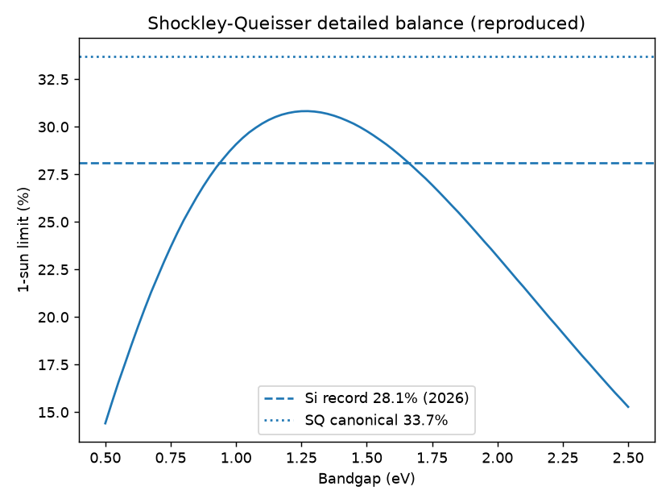
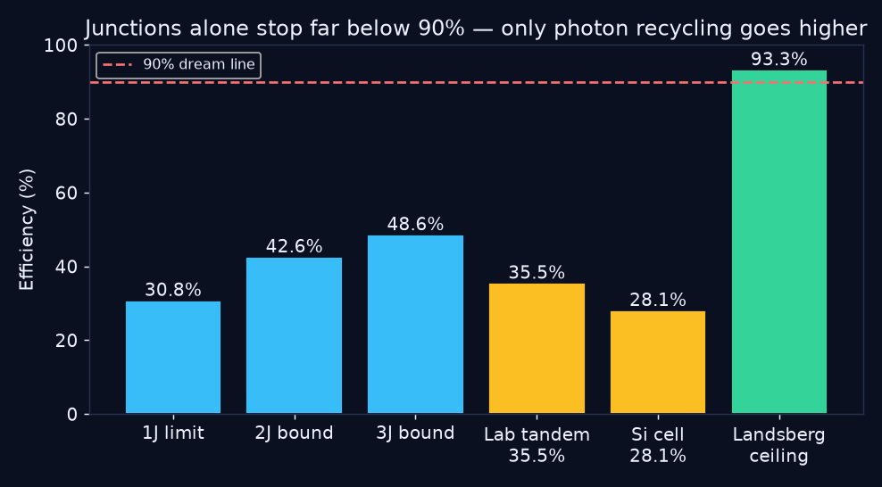
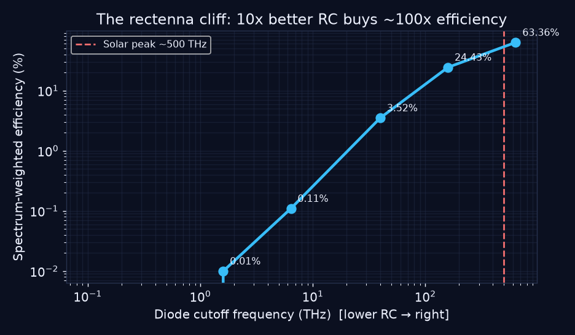
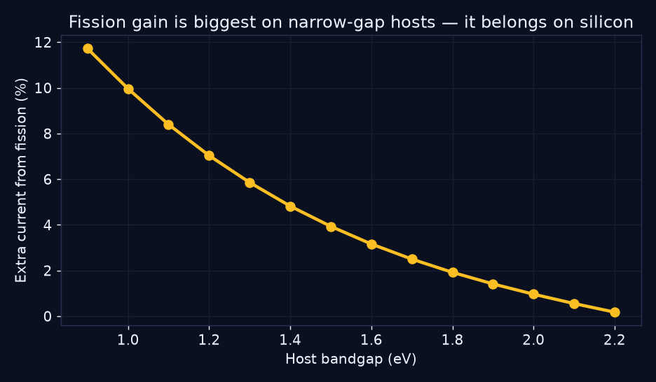
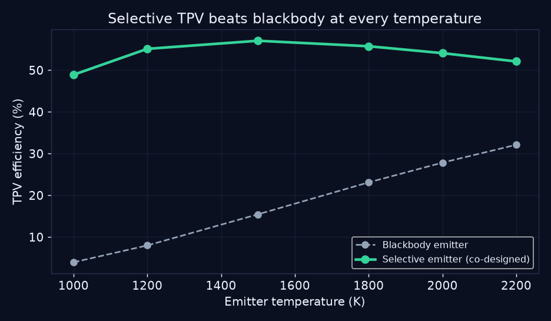
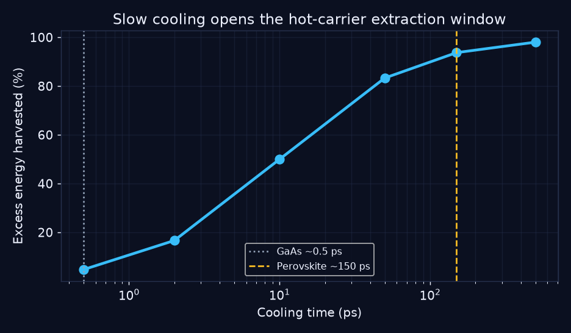

🎓 Students & interview candidates
Read the beginner guide below and you will know more about solar limits than most interview candidates: the ceiling number, why it exists, and the four escape routes.
CEO summary: today’s best solar cell turns 28 cents of every sunlight dollar into electricity and physics caps single-layer cells near 31 cents. This project reproduces that ceiling from scratch, proves stacking layers stalls near 49 cents, and benchmarks the only four physical routes ever proposed to reach 90 cents — with live-sunlight validation and one-command reproduction. If you remember one line: junctions alone can never reach 90%; only recycled light can.
Each card below is generated from the benchmark output — change the physics and the page changes.
at 1.27 eV — reproduced from Planck's law
gaps [0.95, 1.8] eV
junctions alone never reach 90%
certified, still far below the 2-junction bound
cutoff — 300x too slow for sunlight
the quantitative unlock (RC under 0.3 fs)
one blue photon becomes ~1.08 pairs on silicon
3.7x a blackbody emitter
slow-cooling perovskite vs fast GaAs
the only far-field number above 90%
No chart without a one-line “so what”.

Every certified cell on earth must live under this curve. The 28.1% silicon record does.

Two and three junctions climb to ~43% and ~49% — then stall. Only photon recycling clears 90%.

Each step right means a 10x faster diode — and roughly 100x more captured sunlight.

Blue-photon doubling pays off most on silicon, not on wide-gap hosts.

Reshape heat into one color of light, then convert that color almost perfectly.

Perovskites stay hot 300x longer than gallium arsenide — long enough to harvest.
Hourly measured sunshine for three climates. Tandem beats single-layer everywhere.
| Site | Data source | Single-layer (kWh/kWp/3d) | Tandem (kWh/kWp/3d) | Check |
|---|---|---|---|---|
| Riyadh_SA | open-meteo-live | 4.94 | 6.8 | PASS |
| Berlin_DE | open-meteo-live | 2.34 | 3.22 | PASS |
| Atacama_CL | open-meteo-live | 6.28 | 8.64 | PASS |
Read the beginner guide below and you will know more about solar limits than most interview candidates: the ceiling number, why it exists, and the four escape routes.
Seven self-checking experiments, six hidden-pattern seeds, and a methods section with honest error bars — a launchpad for a dissertation chapter.
Which 90%+ bet deserves money? The benchmark ranks them by thermodynamic legality: photon recycling first, ultrafast diodes second, multiplication stacks third.
Each visual carries a plain-language “so what”. Start with the video, then the beginner guide. No equations required to get the point.
You will know more than most interview candidates. Five ideas, five minutes.
Sunlight arrives as packets of all energies. A cell only keeps packets near its own energy: too-strong packets dump the extra as heat, too-weak ones walk straight through. That double waste is the whole game.
Counting the packets with Planck’s law gives 30.8% at 1.27 eV. The certified silicon record (28.1%) lives underneath it. Nobody — nobody — beats it with one layer at room temperature.
Two layers catch two packet sizes (~42.6%), three catch three (~48.6%). Infinite layers still stall near 68%. Stacking alone can never reach 90%.
Antennas catch light as waves (today’s switches are 300x too slow). Photon doubling splits one strong packet into two (works best on silicon). Heat batteries melt sunlight into heat, then re-emit one perfect color (selective emitters already beat plain ones 3.7x). Hot harvesting grabs packets before they cool (perovskites stay hot 300x longer). Only recycled light has a legal ceiling above 90%: 93.3%.
Run the benchmark below. If any law above were wrong, the run fails loudly. That is what makes this science, not slides.
docker compose run bench # full physics benchmark docker compose run validate-live # live-sunlight validation pip install -r requirements.txt && make test bench live exps